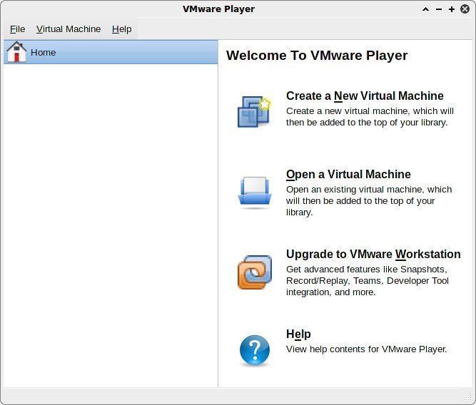
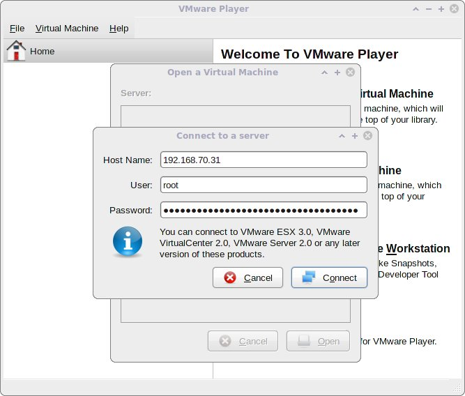
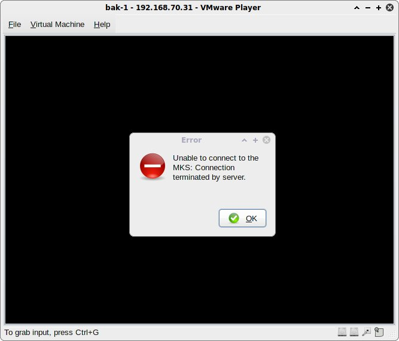

VMware VMs from a Linux-based PC.
Tags: howto, hack
Alias: /2010/11/howto-vmware-player-as-remote-console.html
Since I am doing a lot of remote systems administration tasks due to the nature
of my IT consulting work and since I am also running Linux on all my computers
I was looking for a native way how to get a remote console to VMware VMs from
linux.
After some searching I found that VMware Player (which has native binaries for
Linux) can be used as a VNC client to get to VMs consoles. However, once I have
downloaded VMware Player’s bundle and was faced with its requirement to run the
installation script as root I became quite unhappy with an idea of running some
proprietary software on my machine as root, especially after looking into the
bundle and the way the installation script was written. Moreover, there was no
need for other parts of VMware Player – I just wanted to have a small tool to
be able to hook the remote consoles up under my lovely Linux environment.
Therefore, I decided to take a challenge and to tweak the installation so it
will be possible to install the whole thing as a non-privileged user. Another
sub-goal was to strip the installation further down and prepare a small package
with only components needed for remote console sessions.
If you are not concerned about security (and integrity) of your system, e.g.
you are fine with the re-installation of the whole system, then it will be
cheaper to just install the VMware Player under the root account. In this case
you don’t need to read any further since what I am describing below is for
those brave hearts who value their systems and who do not want to give a chance
to mess their systems up by running low-quality custom installation scripts as
root.
Well, if you are still reading, then I hope that my research on this topic and
the how-to I have spent considerable time to come up with is worth something
and will be of some help to you.
Our starting point is a Linux-based system (it does not matter what
distribution you are running, but I did everything on a customised ALT Linux’s
RPM-based distribution) running on an x86 compatible hardware (mine was 32-bit,
but I see no issues with 64-bit ones).
The first step is to download VMware Player for your architecture, set proper
permissions on the downloaded file, and then extract the payload as follows
(you need to ensure that you have at least 40MB of free space on /tmp, BTW):
drwxr-xr-x 8 vmware vmware 4096 Nov 23 09:01 vmware-installer
drwxr-xr-x 4 vmware vmware 4096 Nov 23 09:01 vmware-ovftool
drwxr-xr-x 5 vmware vmware 4096 Nov 23 09:01 vmware-player
drwxr-xr-x 11 vmware vmware 4096 Nov 23 09:01 vmware-player-app
drwxr-xr-x 3 vmware vmware 4096 Nov 23 09:01 vmware-player-setup
So far so good. We now have the whole bundle unpacked into the specified
directory and we are interested in just two subdirectories: vmware-player and
vmware-player-app, the rest is not related to the functionality we are
looking for.
Now, let’s pick up all parts from which we will build our future “VMware remote
console” tool. To make it easier create a dedicated subdirectory, e.g.
vmrconsole, with the following structure:
drwx------ 2 vmware vmware 4096 Nov 24 01:21 share
From now on we are going to populate these directories with files from the
unpacked bundle.
The first file we are interested in is appLoader – this is the primary
executable by the way, we need to copy it to our bin directory and then try to
run it:
Huh, this is not very informative, is it? The binary silently exits with error
code of 255. Well, you may get other errors at this stage if you don’t have all
the required shared libraries installed on you system – however I doubt it
since the requirements of this binary are pretty reasonable: glibc and zlib.
OK, let’s take a peek inside and figure out what is going on (originally I used
strace with logging to a file, but to keep this article reasonable short I am
highlighting important things only):
It looks that vmplayer wants to access a global config file and does not try to
look for an alternative, home directory based one. Well, this is understandable
since VMware folks did not expect it to be run as a non-privileged process, but
we need to deal with this somehow. What are our options here? The simplest
option I could think of at the moment is to substitute the hardcoded absolute
path inside the binary with something relative:
The trick here is to substitute one string with another of the same length (we
are modifying a binary so we do not want to mess offsets up) and luckily enough
we can use whatever number of slashes we want – they all are considered as a
single separator nevertheless. OK, we could have used a hex editor and could
have terminated strings with a NULL byte, but the point is that the approach I
took is the quickest and is working well. Let’s run the modified binary through
strace again, but this time we need to be prepared for the changed behaviour:
Looks better, does not it? Our binary found the config file and was able to
open it, however it still produces no output, but it reports something to a log
file:
Nov 24 01:53:09.824: app-3077760704| Log for VMware Workstation pid=9245 version=7.1.3 build=build-324285 option=Release
Nov 24 01:53:09.824: app-3077760704| The process is 32-bit.
Nov 24 01:53:09.824: app-3077760704| Host codepage=utf8 encoding=UTF-8
Nov 24 01:53:09.824: app-3077760704| Calling: "./vmplayer"
Nov 24 01:53:09.825: app-3077760704| Using configuration file ..//////etc/config.
Nov 24 01:53:09.825: app-3077760704| libdir entry was not present in ..//////etc/config.
Nov 24 01:53:09.825: app-3077760704| Unable to lookup library directory.
I do not know much about VMware Players config file but according to the log
message it wants some variable called libdir and this variable should point
to the library directory, so let’s introduce such a variable and try to execute
the binary again:
write(5, "LOG NOT INITIALIZED | LoadLibrar"..., 73) = 73
open("../lib/libvmplayer.so/libvmplayer.so", O_RDONLY) = -1 ENOENT (No such file or directory)
write(5, "LOG NOT INITIALIZED | Error load"..., 153) = 153
write(5, "LOG NOT INITIALIZED | Could not "..., 74) = 74
I hope you have noticed that I have used a relative path for the library
directory in the config file and this means that we always should run the
binary with its directory being the current working directory. This is a bit
inconvenient, but we will solve this with a wrapper script later. Right now, we
need to get it working and we see that it tried to dynamically load some
library from the library directory. OK, let’s search for this library in the
unpacked bundle directory and copy the library file over to our tree:
The last command showed that libvmplayer.so depends on some libraries and
that their locations are currently unknown to the system. In order to solve
this there are two things we need to do:
We need to tell the system where it should search for the libraries;
We need to locate these libraries and put them into a directory where the
system will find them.
To accomplish the first thing we need to create a wrapper script around
vmplayer and use this script for fine-tuning later. Here is the very basic
script for this purpose (created as ~/vmrconsole/bin/loader.sh):
#!/bin/bash
# We must run vmplayer from the directory it resides in since all
# relative paths are solved from there.
ORIG_NAME="${BASH_SOURCE##*/}"
ABS_NAME=$(readlink-e$BASH_SOURCE)||exit1
VMW_BINDIR="${ABS_NAME%/*}"
VMW_LIBDIR="$VMW_BINDIR/../lib"
# check that directories exist, if not notify the user
if[!-d"$VMW_BINDIR"];then
echo"ERROR: cannot determine the directory where this script resides!">&2
exit1
fi
# preserve the current working directory
OLD_PWD="$PWD"
if!cd"$VMW_LIBDIR">/dev/null2>&1;then
echo"ERROR: the '$VMW_LIBDIR' directory does not exist!">&2
exit1
fi
# resolve the library directory path (to get rid off ../ inside of it)
VMW_LIBDIR=$(pwd-P2>/dev/null)
if[$?-ne0-o!-d"$VMW_LIBDIR"];then
echo"ERROR: could not resolve the '$VMW_LIBDIR' directory path!">&2
exit1
fi
# return back since it possible that we were called as ./vmrconsole
if!cd"$OLD_PWD">/dev/null2>&1;then
echo"ERROR: could not return to the original '$OLD_PWD' directory!">&2
exit1
fi
# we don't need the following variable anymore
unsetOLD_PWD
# change the current directory to $VMW_BINDIR
if!cd"$VMW_BINDIR">/dev/null2>&1;then
echo"ERROR: failed to change directory to '$VMW_BINDIR'!">&2
exit1
fi
# set the library search path so the dynamic linker will be able
# execute the real binary and pass the supplied arguments to it
exec-a"$ORIG_NAME"./appLoader"$@"
This wrapper script should not be called directly, instead we need to create a
symbolic link to this wrapper, e.g. for vmplayer the following should be
performed:
Now we need to populate our library directory with the needed libraries. It is
a bit tricky to describe since on different systems you will likely end up with
different sets of libraries inside our local directory. For example, on my
system I have quite a few of the libraries installed from the distribution
repositories and these versions of libraries are fresher and with many bug
fixes in comparison to the VMWare provided ones.
Anyway, the general approach to install missing libraries is the following –
we start with the libraries we determined as missing during our ldd
~/vmrconsole/lib/libvmplayer.so/libvmplayer.so | fgrep 'not found' step (we
need to locate and copy them over to our library directory):
Once this is done we need to follow the following loop until there is no output
from the command listed below (in fact, on my system this step was not needed
since I had all dependencies in place already, but it is harmless to execute
this command anyway):
If we try to access any remote VM’s console it will be clear that some parts
are still missing:
[user@localhost ~]$ vmrconsole192.168.70.31
Failed to open file '/usr/lib/vmware/share/pixmaps/progress.png': No such file or directory
Failed to open file '/usr/lib/vmware/share/pixmaps/eula.png': No such file or directory
Failed to open file '/usr/lib/vmware/share/pixmaps/stream-spinner.png': No such file or directory
Failed to open file '/usr/lib/vmware/share/pixmaps/stream-spinner-stopped.png': No such file or directory
SSLLoadSharedLibrary: Failed to load library libcrypto.so.0.9.8:/home/vmplayer/vmrconsole/bin/libdir/lib/libcrypto.so.0.9.8/libcrypto.so.0.9.8: cannot open shared object file: No such file or directory
strace is our best friend here, just run the command through strace,
examine the log file, and fix stuff properly:
Ufff, we did a lot of binary patching – luckily, VMware binaries and libraries
are not calculating their checksums. Now, we need to put all this stuff we have
seen in the strings output and during the execution of the program in place (in
accordance to our new relative paths):
At this stage we should be able to launch the vmplayer program via our wrapper
script (I am launching it on a remote machine through SSH, but here I am
describing how it should look on the local console):
[user@localhost ~]$ ~/vmrconsole/bin/vmplayer

So far so good, but we need to resolve the issue with the OpenSSL library
dependency. To resolve the issue we need to create symbolic links from our
local library directory to the system-wide version of the OpenSSL library:
Let’s try to connect to remote VM’s console again:
[user@localhost ~]$ vmrconsole192.168.70.31


Well, this error message does not say much except that we are not getting our
console :). If we check the log file directory we would see there is a file
called player-XXXXX.log (where XXXXX is the PID of the VMware Player that
produced this log file). Inside the log file we may see some interesting parts
like the following (I have included only those messages which are related to our
task):
Nov 24 03:40:42.072: player| Unable to launch vmplayer-daemon: File does not exist.
Nov 24 03:40:42.072: player| Unable to find /home/vmplayer/bin/vmware-unity-helper in attempt to launch daemon.
Nov 24 03:41:04.630: player| Player dispatch: Opening VM while not connected to the daemon.
Nov 24 03:41:05.437: player| ConnectMksClient - calling VMClient_ConnectMksClientEx
Nov 24 03:41:05.437: player| VMClient_ConnectMksClientEx - trying local socket connection
Nov 24 03:41:05.444: player| Cnx_Connect: Returning false because CnxConnectAuthd failed
Nov 24 03:41:05.444: player| Cnx_Connect: Error message: Connection terminated by server
Nov 24 03:41:05.444: player| VMClient_ConnectMksClientEx - trying remote socket connection
Nov 24 03:41:05.611: player| VMClient_ConnectMksClientEx - connecting the MKS client
Nov 24 03:41:05.616: player| vmdbPipe_Streams: Couldn't read
Nov 24 03:41:15.941: player| Gdk: losing last reference to undestroyed window
From the messages quoted above it is quite clear that the program is trying to
launch some helper binaries/daemons in the background and to delegate the
actual remote console task to them. You can strace/ltrace the whole thing,
review the resulting logs and you will find that it tries to execute two helper
binaries: vmware-authd and vmware-remotemks, the latter is the remote
console engine, while the former is some kind of an authentication daemon and I
do not think it is needed for our purposes. I am not going to describe in
details how I arrived at the following (it is all clear once you have studied
the strace/ltrace log files):
Ouch, we are presented with a bunch of hints – your mileage may vary since it
depends on the environment, but you surely will see the hint/error message
presented on the above screenshot.
This is not a showstopper if you are an English-only user - just click on the
OK button and you should be able to work with the console, however I think it
is just a right thing to do to fix this little bugger:
We are almost done! At least we achieved the goal we set at the beginning of
this article.
Now, it is time to ensure that all file/directory permissions are strict enough
and to create a tarball, then place it somewhere so we will be able to use our
new tool when the right time comes:
-rw-r--r-- 1 vmware vmware 13M Nov 24 07:06 vmrconsole-3.1.3.324285.i386.tar.bz2
P.S. Oh, boy, it takes 2 hours to investigate and to come up with a solution,
then 8 hours to write an article to describe steps to reproduce! I hope that
somebody has found this article useful and I would appreciate any comments.